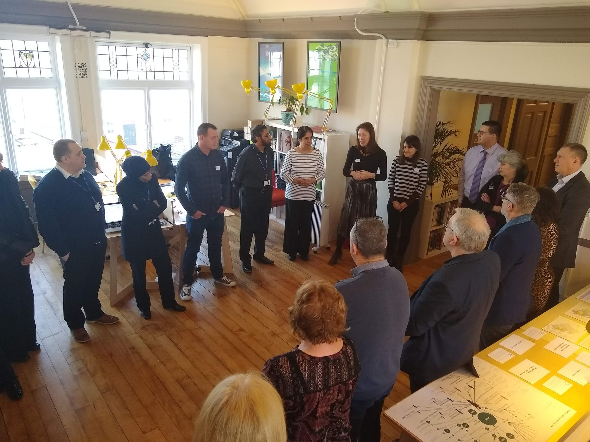

Transforming Bradford's advice system

the advice system map — every provider, channel and enquiry route across the district
Over a 20-week agile transformation project, I took Bradford City Council and the wider VCS sector through a user-centred design journey. I worked alongside lead designer Maia Tarling-Hunter.
phase 01
Upskill & plan
Research training with council & VCS staff
phase 02
Research in the field
Shadowing services, interviewing residents
phase 03
Map needs & journeys
Advice areas against surfaced needs
phase 04
Agree the scenario
Participatory tools for financial decisions
discovery & research
01
Upskilling the council to research
I upskilled staff to help me plan, design and deliver research — shadowing services and community organisations, and interviewing residents — then built tools that helped different stakeholders reach a shared understanding.
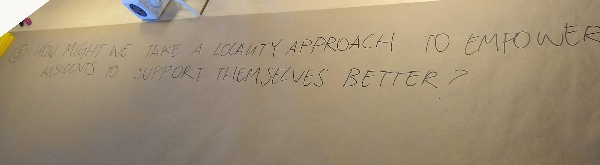
framing "how might we" questions on the wall
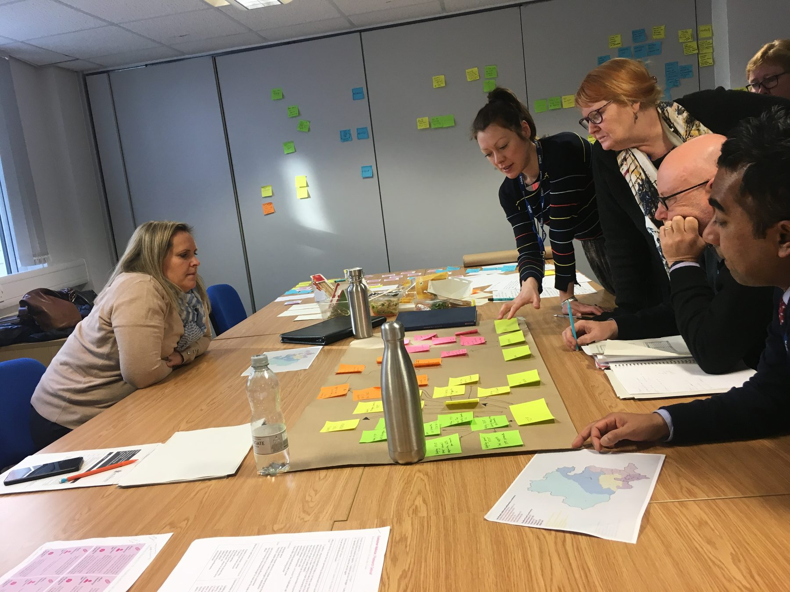
Research training and fieldwork — kicking off with council and VCS staff, framing "how might we" questions and mapping the current service with staff
synthesis & mapping
02
Mapping needs and journeys
I mapped every advice area against the needs that research surfaced, and designed user journeys that exposed pain points where services overlapped.
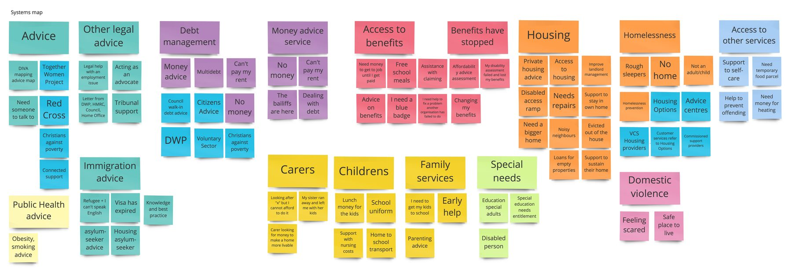
every advice area mapped against the needs research surfaced
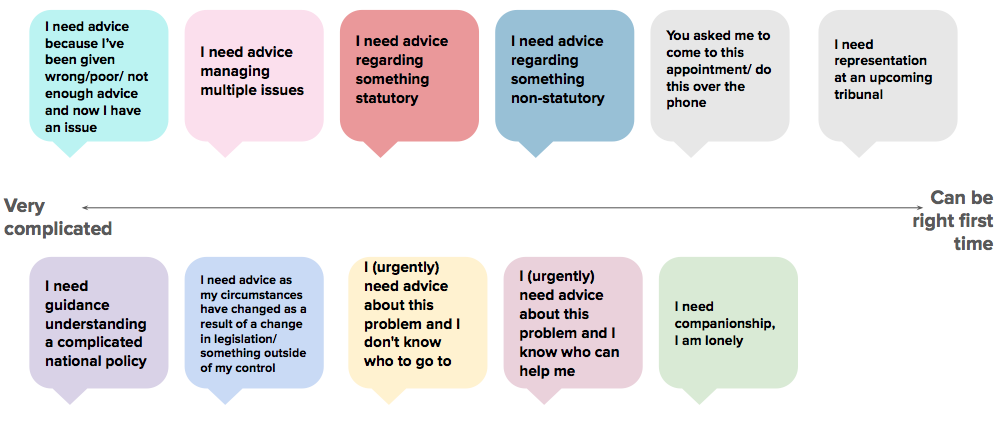
plotting advice needs on a spectrum, from very complicated to can be right first time
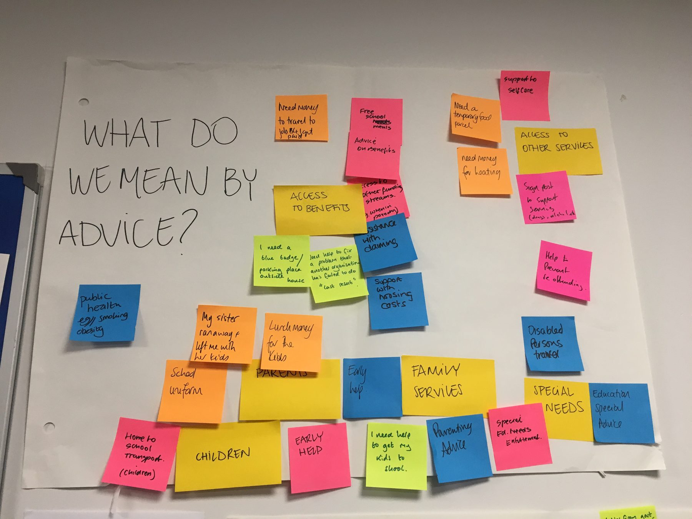
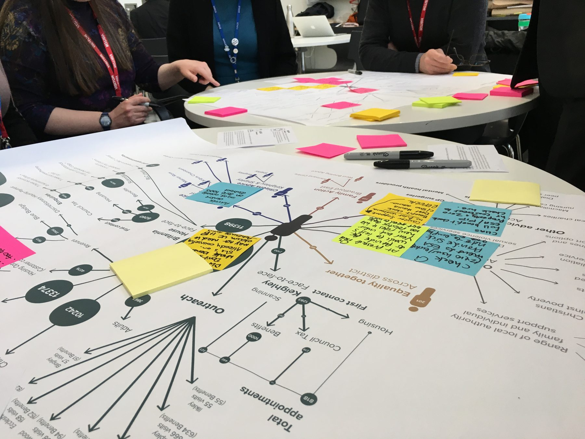
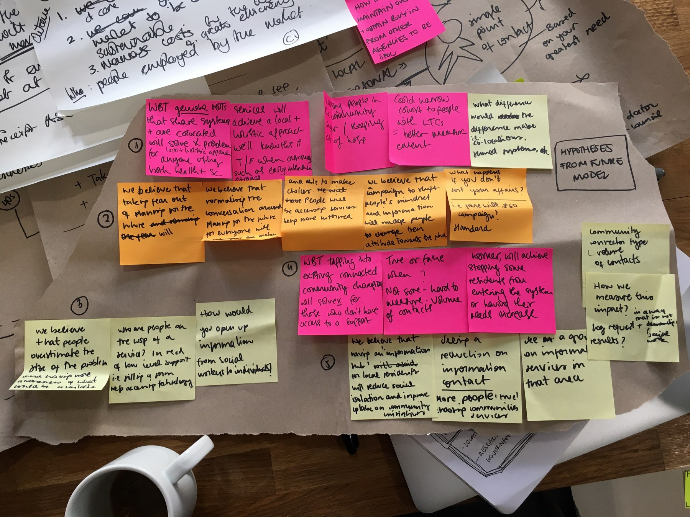
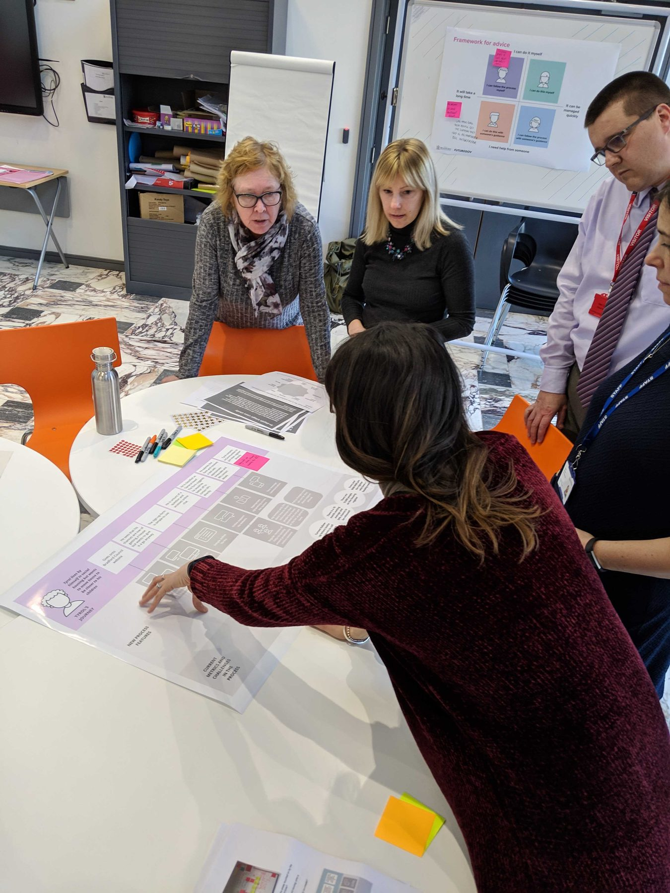
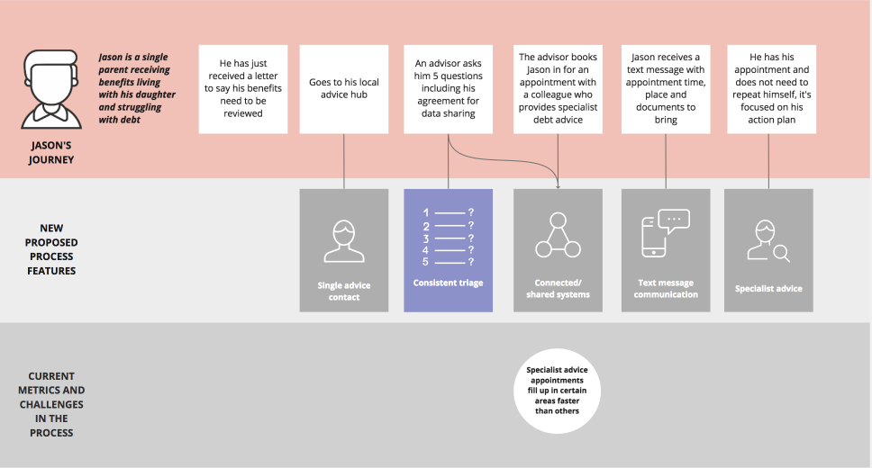
defining what "advice" means, testing hypotheses against the future model, annotating the system map with stakeholders, and user journeys exposing pain points where services overlapped
scenario modelling
03
Making hard choices together
The project also carried politically charged conversations that were emotionally difficult for most stakeholders involved. I turned financial proposals into participatory tools — activities that invited the different actors in Bradford's advice system to look at the options realistically, and agree on the best scenario model together.
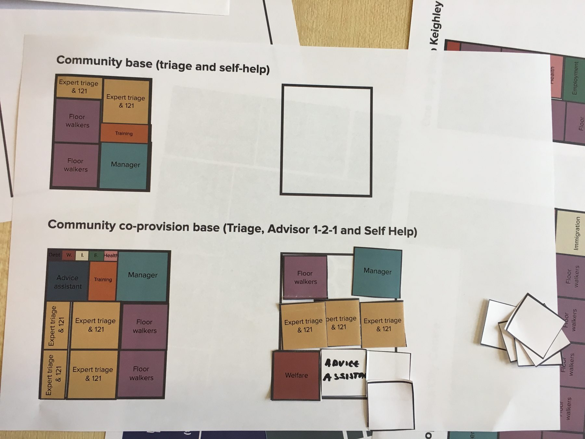
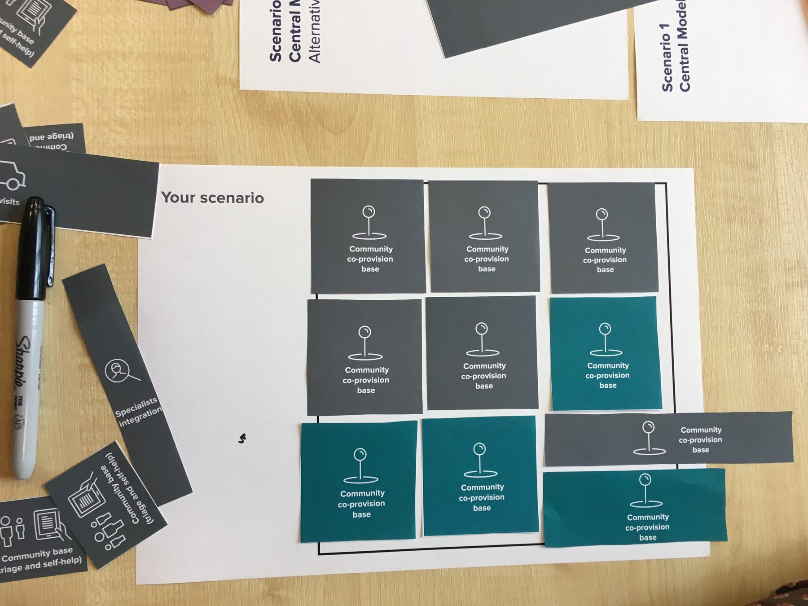
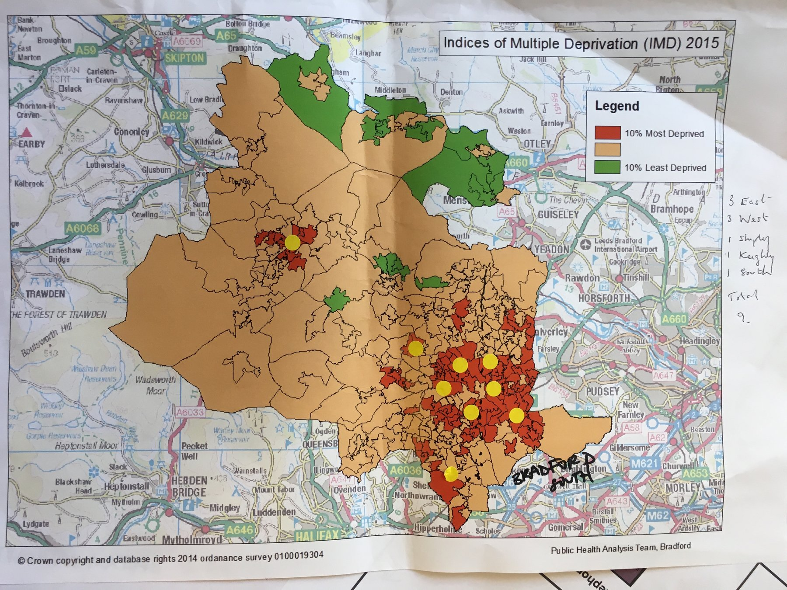
the participatory kit — service blocks, a build-your-own scenario board, and deprivation data for locating community bases
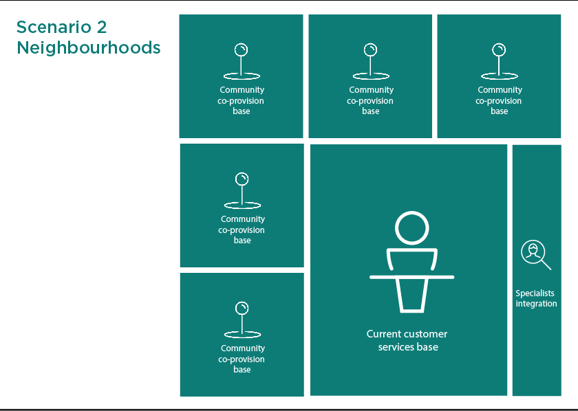
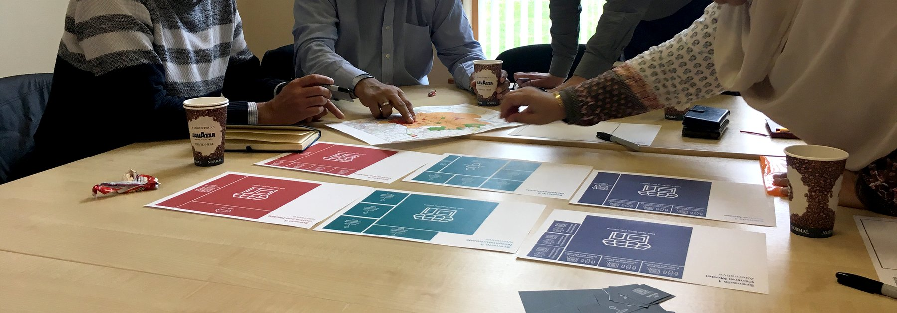
scenario models made tangible, then reviewed with the actors in Bradford's advice system
outcome
That shared view of the system helped make the case for reducing duplication and improving the resident experience, while keeping costs down.